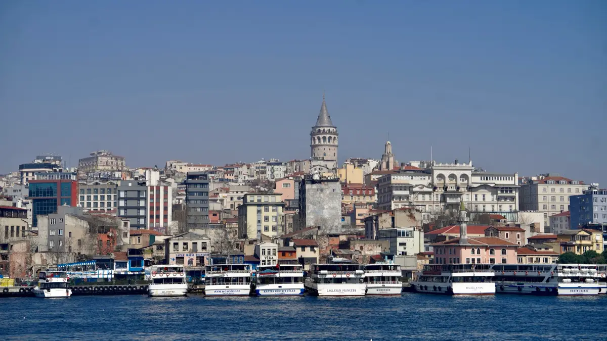

I went to Istanbul with a robotics team. Between matches, I carried a camera. Back in Shanghai, I kept looking: at a forest in the afternoon, at the river after sunset, at the birds in between.
72 photographs / four collections

Shot in the streets and on the water while representing my school at the FRC regionals in Istanbul — domes and minarets in winter light, gulls trailing the Bosphorus ferries, and the small quiet corners in between.
One afternoon in Shanghai's Gongqing Forest Park, when the light starts leaning sideways — maple canopies, a toy-like forest train, and gardens holding on to every color they have.
The Huangpu riverfront after the sun has gone but before the sky gives up — old industrial gantries, half-built towers, and a river that collects every light the city spills.
Not every photograph belongs to a trip. Doves on stone ledges, an egret working the shallows, a train sliding out of the hills — frames collected one at a time, wherever they happened.
Photography is also something I teach. I designed and ran a photography workshop for my school's robotics club — 25 slides on the exposure triangle, reading the direction of light, composition and story, and how to shoot atmosphere in low-light and night scenes, illustrated with my own photographs.
Open my workshop notebook (PDF) ↗